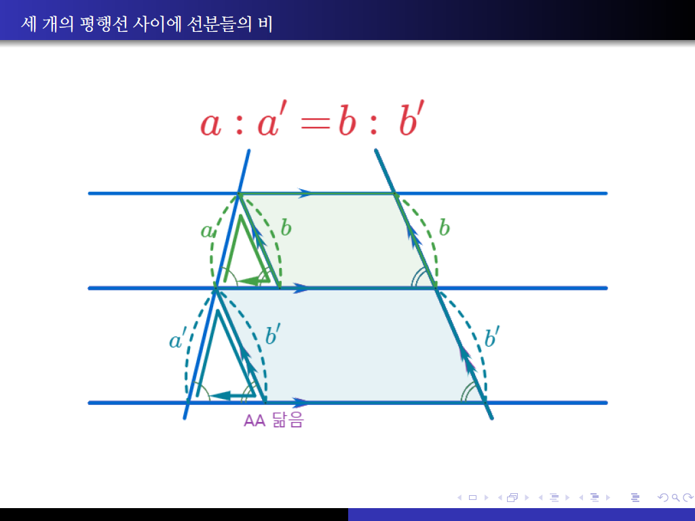
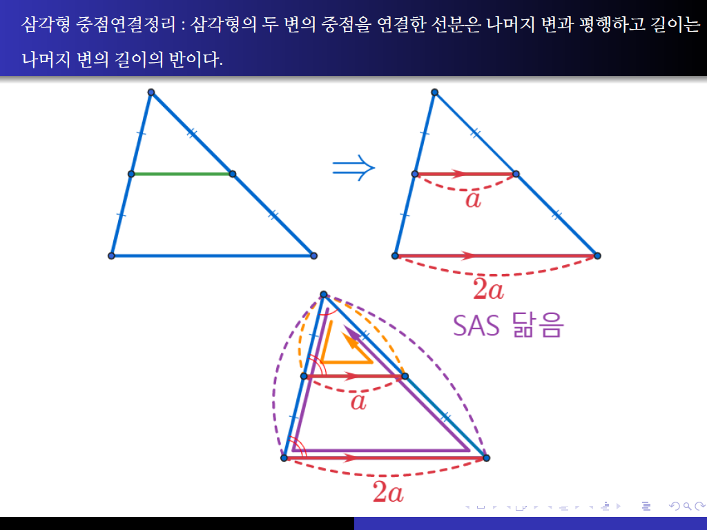
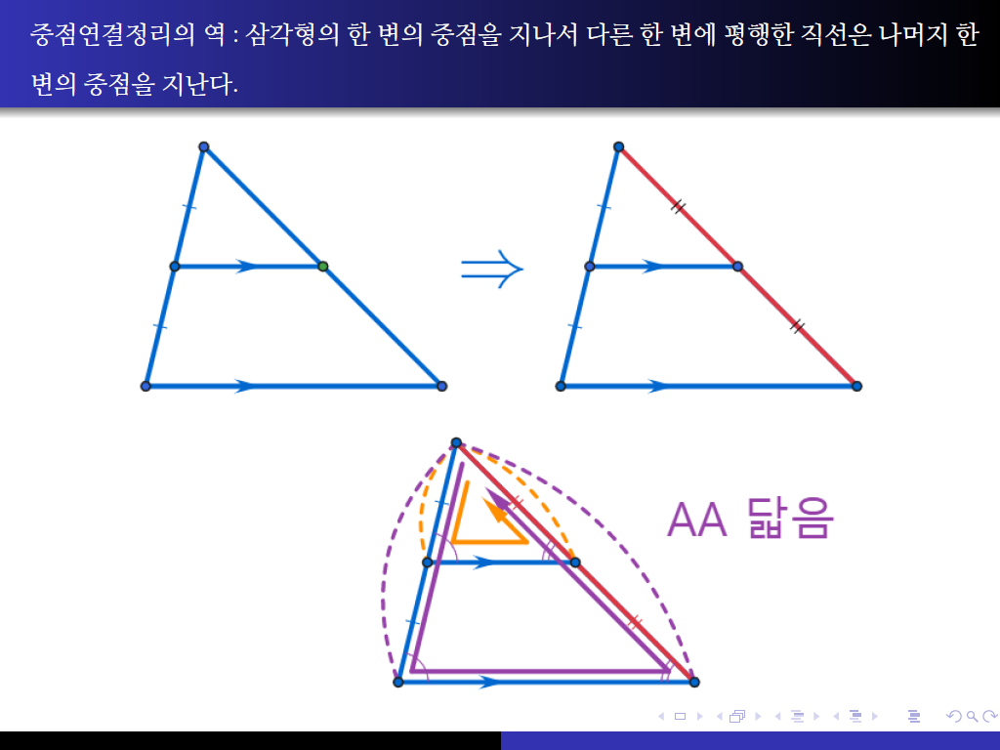
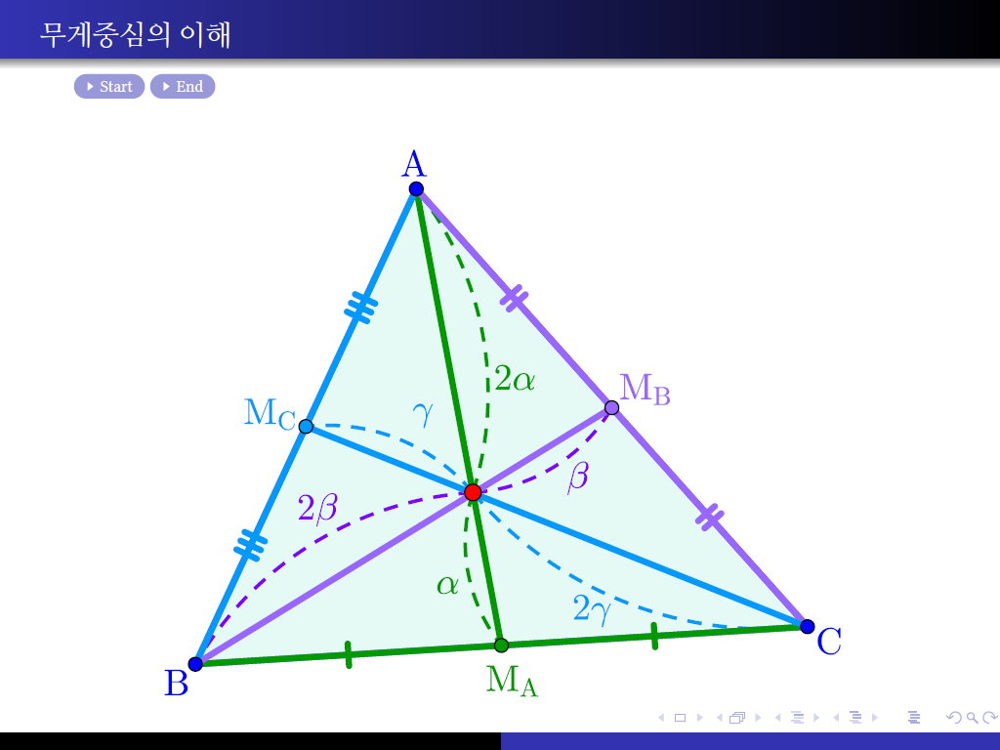

평행선 사이의 선분의 길이의 비
세 개의 평행선 사이에 선분들의 비
[PDF]
[AlgeoMath]

중점연결정리 : 삼각형의 두 변의 중점을 연결한 선분은 나머지 변과 평행하고 길이는 나머지 변의 길이의 반이다.
[PDF]
[AlgeoMath]

중점연결정리의 역 : 삼각형의 한 변의 중점을 지나서 다른 한 변에 평행한 직선은 나머지 한 변의 중점을 지난다.
[PDF]
[AlgeoMath]

삼각형의 무게중심
